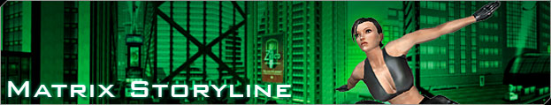
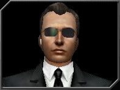
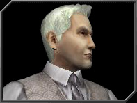
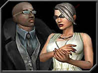

|

The Matrix is an illusion. It appears to be America at the turn of the 21st century;
a vast megacity and an adjacent mountain range. In truth it is a virtual, digital
world that humans experience through feeds running directly to their nervous
systems. These humans experience an artificial life in the Matrix, unaware of
their real state.
Storyline: Quick
Links
Storyline: A
Brief History of The Matrix
The Matrix is an illusion. It appears to
be America at the turn of the 21st century; a vast megacity and an adjacent
mountain range. In truth it is a virtual, digital world that humans experience
through feeds running directly to their nervous systems. These humans experience
an artificial life in the Matrix, unaware of their real state.
In reality, the actual date is unknown,
but it is believed to be a couple of centuries later. The proprietors
of the Matrix are machines that have won a war with humankind. In the
war the sky was “scorched,” denying
them their source of energy, solar power. Instead, they now use sleeping
humans, enclosed in liquid-filled pods on vast batteries, to generate heat
that becomes electricity.
Continue Reading: A Brief History
of The Matrix
Storyline: The
Organizations
There are three major organizations vying for power
inside of The Matrix: Zion, The Machines, and The Merovingian. Each organization
has specific agendas and goals for the future of The Matrix. As a newly
awakened redpill, you will be contacted to serve one, or all, of these
organizations.
Here is a brief description of each organization.
Zion
Zion
is the last city of free humanity, located deep within the earth. In
the Matrix, the Zion Organization stands for humanity’s right to
determine its own destiny. Zion believes that a human being’s
freedom to select his or her own destiny is sacred, and that each
individual must be free to choose whether to live out their life
in the comforting illusion of the Matrix, or in the harsh truth of
the real world.
Redpills in the service of Zion are
expected to risk everything for its ideals, and to be happy with a fair
share of whatever prosperity may fall Zion’s
way.
The Machines
The Machines
are a race of self-replicating, sentient mechanical entities. They imprisoned
humanity within the pods, and they power themselves with the bio-electric
energies generated by a healthy human mind. They don’t
want to destroy humanity – quite the contrary, they are utterly dependent
on humanity for their continued existence. The only thing about humanity
that matters to the machines is that energy continues to flow out of the
pods. They do not care if the humans are slaves or free – up until
the point where human freedom starts to interfere with the energy fluxes.
The Machines will make deals with human Redpills when it suits their purpose
to do so. They are quite scrupulous about delivering whatever rewards they
may have promised to the human operatives, but emotions like gratitude, generosity
and mercy are completely alien to the machine mind.
Although they are no longer engaged in active hostilities against Awakened
humans, the Machines continue to guard themselves in the real world with
the hunter-seeker units called Sentinels, while the cold and implacable AI
constructs called Agents continue to oversee their interests in the Matrix.
The Merovingian
When they built the
Matrix, the Machines found it necessary to create autonomous AI (Artificial
Intelligence) constructs that would look and act like human beings. Inevitably,
some of the AIs acquired free will, and then some of these free AIs began
to comprehend the true nature of the Matrix. These AIs, in turn, started
to establish communication with other Machine AIs outside the Matrix
proper, and the Matrix came to be known as a safe haven for these sentient
programs who wished to flee the control of the Machine world. In The Matrix
an AI could feel, live and breathe as never before. A new life could be
granted to those that wished to flee from the control of the machine world
or avoid deletion. The Matrix came to be known as a safe haven for these
sentient programs. These “Awakened” pseudo-humans
call themselves “Exiles.”
The Exiles are, above all, concerned
with the continuance of the Matrix. They have no place – no possibility
of existence even – in the
real world. They depend on both humanity and the Machines for their continued
existence, but their agenda is uniquely and utterly their own. Most alarmingly,
the Exiles tend to be capricious and unpredictable. Many are mischievous,
malicious or even outright insane, but they are also intelligent (sometimes
inhumanly so), creative and very powerful within the Matrix. This combination
means that Exiles are never easy, nor particularly safe, for humans to
deal with.
The Merovingian (a name taken from
an ancient line of kings in human history) is the most active and powerful
of the Exiles. If he is not exactly the sole leader of the Exile community,
he is certainly the first among equals, and he is by far the most active
Exile player in Matrix politics. He has spies and operatives everywhere
in the Matrix. He will cheerfully employ human Redpills whenever it suits
him to do so, and he is quite generous in rewarding those who serve his
interests.
Storyline: The
Organization Controllers
Controllers assign redpills various
missions for specific organizations. The Machines, Zion, and The Merovingian
each have a specific and trusted controller who operates their specific
agendas within The Matrix. The more successful a redpill performs with
his or her missions, the higher their reputation with an organization.
This allows the Controllers to increasingly rely on specific individuals
for extremely important assignments.
|
 |
Tyndall considers herself to be a representative of
Zion, but in spite of her effort to paint herself as a servant of
the cause, she has become a leader through her devotion and dedication.
She often takes personal responsibility for the mishaps of Zion,
feeling that somehow, the fault is her own; she is quick to apologize
when things have gone awry. Tyndall sometimes speaks to her operatives
in the Matrix as if she is with them, likely because she desires
nothing more than to return to the Matrix to work for Zion's victory
firsthand.
|
|
|  |
Agent Gray was selected to act as recruiter and
Controller for human beings that the Machines believe can assist
them in controlling the Matrix. Like all Agents he is normally
dispassionate and aloof, with a precise manner of speaking, but
his forced dealings with humans have left him with somewhat more
understanding of them than most Agents.
|
|
|  |
Flood is a vain man, who deeply resents his position
as second fiddle and lackey to the Merovingian. Regardless, he
plays up his position as one of the most powerful in the Matrix
and a role to be coveted. He's always clad in ultra-stylish clothing,
his hair bleached and styled perfectly. In dealing with humans,
Flood is sarcastic and sometimes even sadistic, lacing his instructions
with qualifiers that suggest his operatives are incompetent. In
conversation he hints that he's only biding his time in this subservient
position until his true plans come to fruition.
|
Storyline: The
Matrix Underworld
Though redpills often take center stage in the saga of the Matrix, there
are many behind-the-scenes characters who play key roles in shaping the
Mega City's socio-political environment. These entities are extremely powerful
Exiles who have entered the system in order to escape deletion, or to amass
personal power.
|
 |
Located
primarily in Richland, this group of Exiles used to be facets of
one larger program before they escaped into the Matrix. The code
comprising them was sundered in their escape from the Machine Source.
Each is fractured along a different line, focused in a different
way — some would call them eccentric,
but others prefer the term "broken." In their new lives
they find themselves drawn to one another: to compete, cooperate,
and monitor each other's activities with obsessive dedication.
You might think of them as a group of close friends who grew up
together, defining themselves by their relationships with each
other. |
|
|  |
The primary group of Exiles in
the Barrens is a dysfunctional family created by two Exile Programs
that have come to be known as Mr. Black and Dame White. While the
two parents are Exiles from the Machine City, the siblings are
all native-born to the Matrix, and take to its power games like
ducks to water. Mr. Black and Dame White covet each other's power,
but never admit it – instead they
work against each other covertly through their children. The siblings
compete for the attention and favor of both parents, as well as covertly
operating for their parents against each other. Grudges and alliances
spring up and are put aside with regularity.
|
|